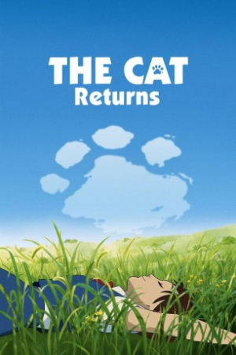

Also known as:猫の恩返し (original title)
Country:Japan, 75 minutes
Spoken languages:Japanese
Genres:Adventure, Fantasy, Animation, Drama, Family
Director(s):Hiroyuki Morita
Writer(s):Reiko Yoshida
Video Codec:Unknown
Number: 2760


Certification:G
Storyline:
Young Haru rescues a cat from being run over, but soon learns it's no ordinary feline; it happens to be the Prince of the Cats.
Cast:

Medium: Original DVD,
Comments: Part of Studio Ghibli Special Edition Collection
Loaned: No
Aspect ratio: Unknown